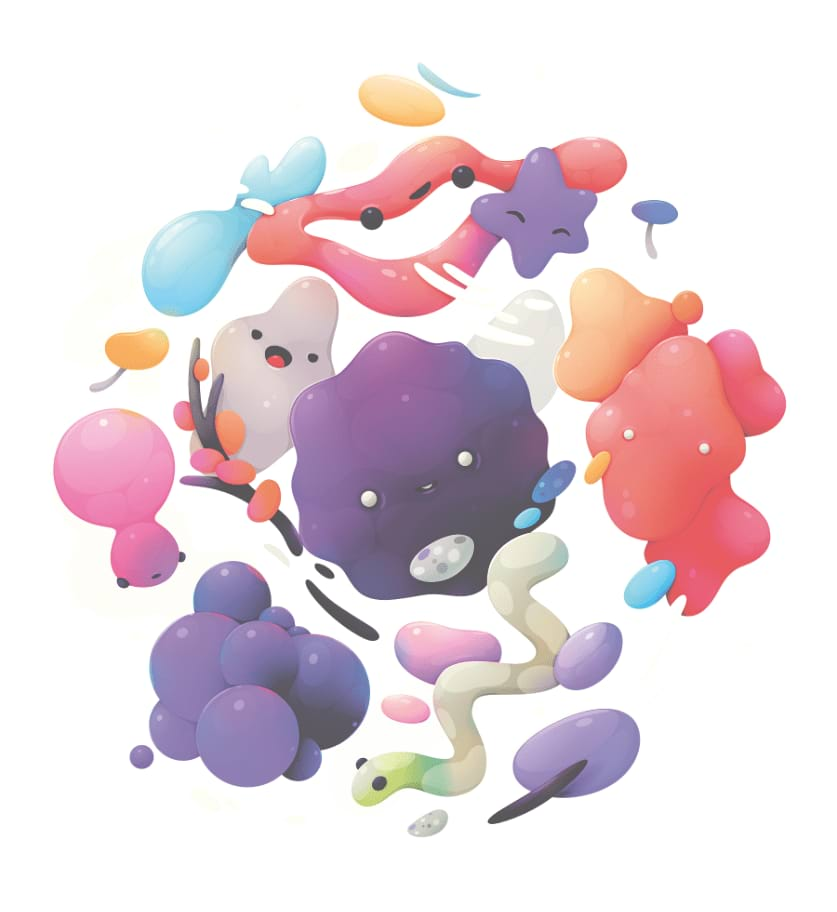

Soft Proof adjustment
Preview the effect of creating an output for a specific color space or device.


Preview the effect of creating an output for a specific color space or device.
This adjustment allows you to preview different output options for your photo or design. It can also be used creatively for tonal effects. As it behaves like a standard adjustment layer, it must be hidden or removed before exporting or sending to print, otherwise its effect will be included in the output.
The following settings can be adjusted in the dialog: